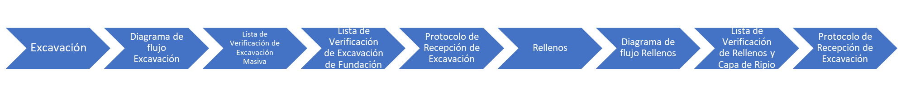

Movimiento de tierra
Contents
Fernández(2020) en su artículo “Construcciones de vivienda unifamiliar de 3 niveles” menciona que la obra gruesa es referida como la primera etapa de todo proyecto que implique la realización de faenas que conformen la estructura gruesa primaria de una edificación o casa. y cuyo alcance no está definido por una regla fija, pero cuyo alcance aproximado incluye estructura general, cimentaciones y movimiento de tierras.
11. Movimiento de tierra#
Las excavaciones y los rellenos necesarios para la obra forman parte de esta partida.
{kind=link}
{kind=link}
11.1. Excavaciones#
{kind=link}
Cevallos(2016) indica en su investigación “Proceso constructivo del edificio administrativo E5 del colegio Alemán Humboldt (anexo Samborondón), ubicado en ciudad Celeste.” Que puede haber variaciones según el terreno y tipo de obra al referirse al material que se debe retirar por debajo del nivel de referencia en los planos.
11.1.1. Excavación dependiendo el material#
Excavación en tierra:
Consiste en retirar las capas de suelo que se encuentran por encima de la roca y por debajo de su nivel natural. Debido a su facilidad de movimiento al ser removido por maquinaria, se utiliza frecuentemente rellenos y paracimentaciones.
{kind=link}
Excavación en Roca:
Cuando el terreno es duro, la excavación se realiza con la ayudade taladros o explosivos, que rompen las capas resistentes y facilitan a la maquinaria la carga y traslado del material resultante (Stozitzky & Prieto, 1989).
Barreno
{kind=link}
Explosivos
{kind=link}
Excavación en Fango:
Es el proceso de remover tierra y materiales indeseables que contienen mucha agua, puesto que estos no soportan carga.
{kind=link}
11.1.2. Excavación según la forma#
Excavación de zanjas:
Como su nombre lo indica, son zanjas donde el ancho es menor que el largo y se utilizan para albergar los cimientos de muros, tuberías y otras estructuras (Prieto y Stozitzky, 1989).
{kind=link}
Excavación a cielo abierto:
Cuando se elimina el suelo de toda la superficie que se va a construir y la estructura carece de un techo de material natural, se denomina tajo abierto (Solminiac & Thenoux, 1998).
{kind=link}
Excavación de pozos:
Cuando se construyen cimientos o pilotes aislados o se buscan fuentes de agua subterránea, se utiliza la excavación de pozos, es decir, excavaciones superficiales pequeñas con una profundidad significativa.
{kind=link}
Excavación de galerías:
Al ser más profundas, estas excavaciones necesitan soporte o entibación.
{kind=link}
Cortes:
se desarrollan en terrenos inclinados donde se realizan cortes y desniveles para llegar con mayor seguridad a los niveles designado.
{kind=link}
11.1.3. Excavación de acuerdo con el modo#
Excavación manual:
excavaciones hechas a mano que no involucran el uso de maquinaria y solo requieren una pequeña cantidad de volumen para ser excavadas.
{kind=link}
Excavación mecánica:
Se utiliza cuando existe la necesidad de excavar a más de dos metros de profundidad o cuando el volumen de la excavación es mayor.
{kind=link}
En general las excavaciones de fundacion tendran las dimensiones necesarias para contener las fundaciones consultadas en los planos de estructura, incluyendo el emplantillado segun sea el caso. El sello de fundacion debe ser al menos hasta llegar al terreno firme o segun cota indicada por planos y/o especificaciones tecnicas.
11.2. Diagrama de flujo Excavación#
(Osses,2015)
{kind=link}
11.3. Lista de Verificación de Excavación Masiva#
(Almonacid,2020)
11.4. Lista de Verificación de Excavación de Fundación#
(Almonacid,2020)
11.5. Protocolo de Recepción de Excavación#
(Almonacid,2020)
11.6. Rellenos#
Esta partida se trata cuando se añade material compactado al suelo para darle más resistencia o en zonas donde la altura es superior a la del suelo original, consiste en colocar material de relleno en dichas zonas. El suelo de otras excavaciones o los materiales de escombros no orgánicos son dos tipos diferentes de materiales que se pueden usar como rellenos (Solminiac & Thenoux, 1998).
{kind=link}
En general, los rellenos y compactaciones correspondientes deberán realizarse, según sea necesario, con material según planos y/o especificaciones técnicas, en cuanto a mejoramiento de suelos con espesor según planos de estructura y/o especificaciones técnicas, los cuales deberán alcanzar los niveles allí indicados. . Hasta alcanzar la capacidad de soporte, los rellenos se compactan mecánicamente en capas sucesivas de un espesor determinado por un profesional calificado.
11.6.1. Diagrama de flujo Rellenos#
(Osses,2015)

11.6.2. Lista de Verificación de Rellenos y Capa de Ripio#
(Almonacid,2020)
11.6.3. Protocolo de Recepción de Excavación#
(Almonacid,2020)